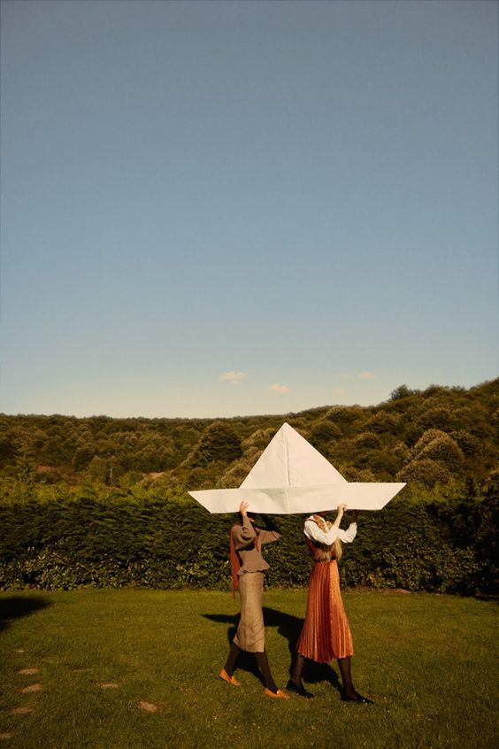

IDM 241: Microinteractions - Final Build
Pinterest saving pin - https://www.pinterest.com

Beta Build Descriptions
Triggers
- Hover on/off image card
- Hover on/off pin button
- Click on/off pin button
- Hover on/off "Undo" button
- Click on "Undo" button
- Hover on/off "X" button
- Click on "X" button
Rules
Hover on image card
- Fade in to filter 50%
- Default cursor to zoom-in cursor
Hover off image card
- Fade out of filter
- Zoom-in cursor to default cursor
Hover on pin button
- Zoom-in cursor changes to pointer
- Color changes to #9E2224
Hover off pin button
- Pointer changes to zoom-in cursor (if still hover on image)
- Color changes to original shade
Click on pin button
- Pin button color changes to black
- Pin icon moves up 5px and right 5px in 0.1s, then down 5px and left 5px to original position
- "Success" toast puff-in from top and fade away after 5s
Click off pin button
- Pin button color changes to #9E2224 (hover color)
- "Removed" toast slides up from the bottom and stays for 5s before fade out
Hover on "Undo" button
- Default cursor turns to pointer
- Background turns to #AAAAAA
Hover off "Undo" button
- Pointer to default cursor
- Background turns original shade
Click on "Undo" button
- Modal condenses and dissolves in 5s
- "Removed" toast modal slides up from the bottom and stays for 5s before fade out
Hover on "X" button
- Color turns to #AAAAAA
- Default pointer turns to cursor
Hover off "X" button
- Color turns to original shade
- Pointer turns to default cursor
Click on "X" button
- Modal condenses and dissolves in 5s
Feedback
Hover on image card
- Fade in to filter 50%
- Default cursor to zoom-in cursor
Hover off image card
- Fade out of filter
- Zoom-in cursor to default cursor
Hover on pin button
- Zoom-in cursor changes to pointer
- Color changes to #9E2224
Hover off pin button
- Pointer changes to zoom-in cursor (if still hover on image)
- Color changes to original shade
Click on pin button
- Pin button color changes to black
- Pin icon moves up 5px and right 5px in 0.1s, then down 5px and left 5px to original position
- "Success" toast puff-in from top and fade away after 5s
Click off pin button
- Pin button color changes to #9E2224 (hover color)
- "Removed" toast slides up from the bottom and stays for 5s before fade out
Hover on "Undo" button
- Default cursor turns to pointer
- Background turns to #AAAAAA
Hover off "Undo" button
- Pointer to default cursor
- Background turns original shade
Click on "Undo" button
- Modal condenses and dissolves in 5s
- "Removed" toast modal slides up from the bottom and stays for 5s before fade out
Hover on "X" button
- Color turns to red
- Default pointer turns to cursor
Hover off "X" button
- Color turns to original shade
- Pointer turns to default cursor
Click on "X" button
- Modal condenses and dissolves in 5s
Loops & Modes
- Modal pops up and remains on screen until the user interacts with it (closes the "x" or undos save)